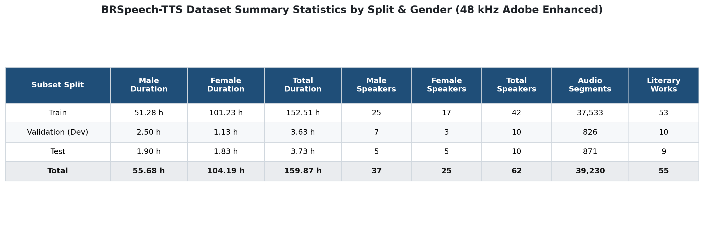
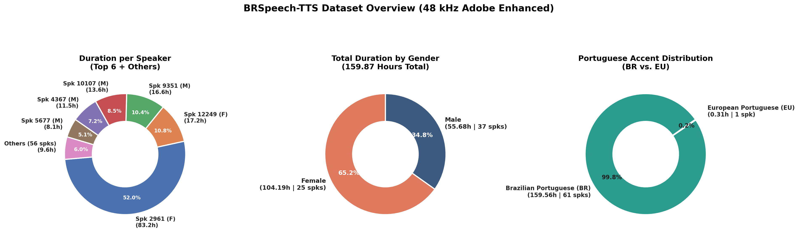
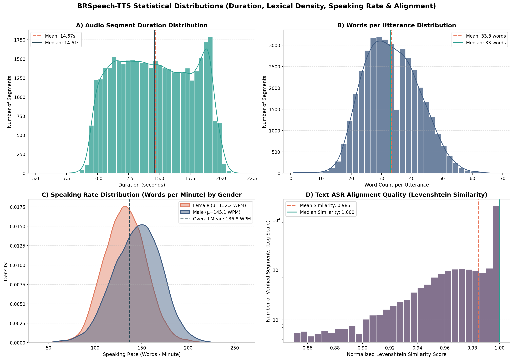
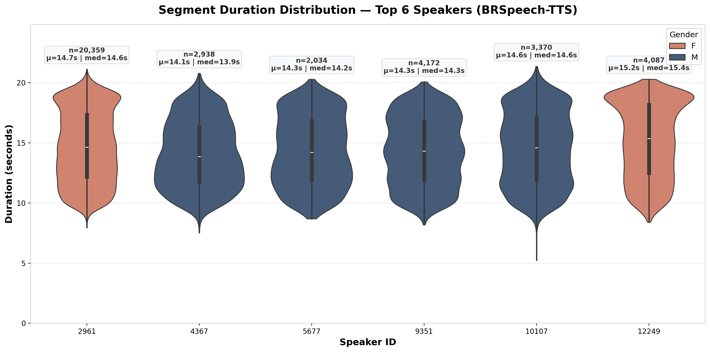
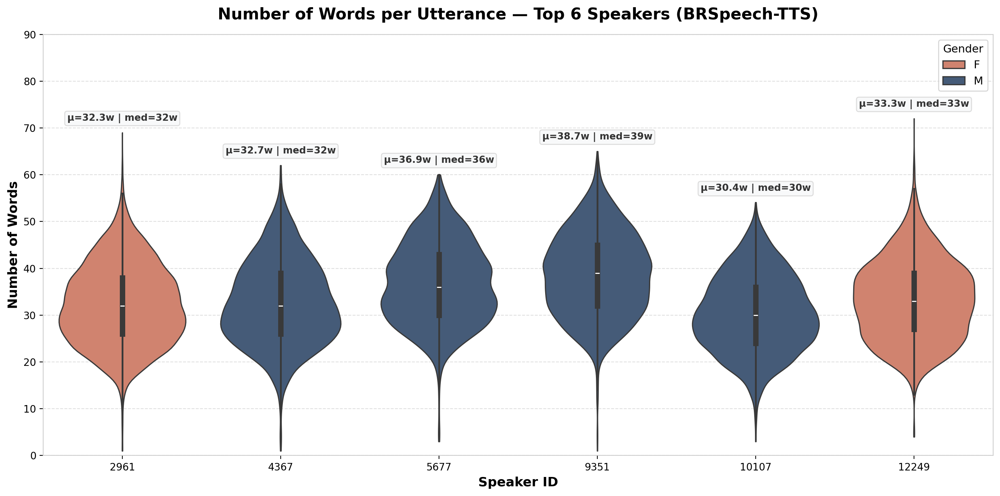
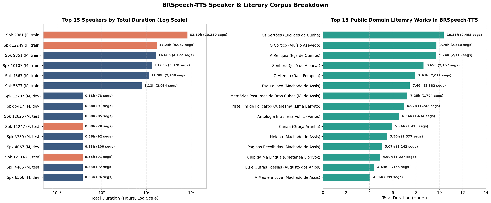

About BRSpeech-TTS
BRSpeech-TTS is a high-quality, multi-speaker speech synthesis (Text-to-Speech) corpus in Portuguese, developed at the Center of Excellence in Artificial Intelligence (CEIA) of the Federal University of Goiás (UFG). It is an enhanced version of the Portuguese subset of the CML-TTS Dataset that underwent professional studio-level audio restoration and speech enhancement using Adobe Podcast Enhance (Adobe Speech Enhancement).
- Adobe Speech Enhancement: All recordings from the CML-TTS Portuguese subset were processed through Adobe Enhancement to remove background noise, room reverberation, and microphone artifacts while preserving speaker timbre and prosody.
- Full-Bandwidth 48 kHz Audio: Upsampled and restored to 48 kHz (16-bit PCM Mono FLAC/WAV), compared to 24 kHz in the original CML-TTS release.
- ASR-Verified Transcriptions: Segments were transcribed using OpenAI Whisper Large-v2 and MMS, aligned against public-domain literary texts from Project Gutenberg and LibriVox, achieving a mean Levenshtein similarity score of 0.983 (median 1.000).
Download & Hugging Face Hub
The BRSpeech-TTS dataset is officially hosted on the Hugging Face Hub at
https://huggingface.co/datasets/freds0/BRSpeech-TTS/
under the CC-BY 4.0 license. You can load it directly in Python using the Hugging Face datasets library:
from datasets import load_dataset
# Load the BRSpeech-TTS dataset from Hugging Face Hub
dataset = load_dataset("freds0/BRSpeech-TTS")
print(dataset)
# DatasetDict({
# train: Dataset({features: ['wav_filename', 'duration', 'text', 'transcript', 'levenshtein', 'speaker', 'file_size', 'num_words', 'gender', 'accent', 'audio'], num_rows: 73848})
# validation: Dataset({features: [...], num_rows: 1158})
# test: Dataset({features: [...], num_rows: 1316})
# })You can also download the original CML-TTS Portuguese archives and segment metadata on OpenSLR (SLR146):
- BRSpeech-TTS on Hugging Face Hub (Adobe Enhanced version — Parquet format with integrated audio, transcripts, Levenshtein scores, speaker gender & accent metadata)
- CML-TTS Dataset Portuguese (v0.1) — MD5:
8c877a4be0eb41f275497609df5a114c - CML-TTS Dataset Segments (v0.1) — MD5:
f529a908aba26a6d891b4fb17ab3125b - BRSpeech-CML-TTS Release Archive (
BRSpeech_CML_TTS_v14012024.tar.bz) — MD5:0966023cea9c0f339dae464d0fcfe7f8
Dataset Statistics & Analysis
BRSpeech-TTS comprises recordings of 55 public-domain literary works from Project Gutenberg read by 62 volunteer narrators from the LibriVox project (61 Brazilian Portuguese speakers accounting for 99.8% of total duration, and 1 European Portuguese speaker in the validation split accounting for 0.2%). Across the 39,230 base FLAC recordings (20.59 GB compressed FLAC; further segmented into 76,322 utterances in the Hugging Face Hub release), the corpus totals 159.87 hours of speech and 1,306,913 words (7.61 million characters).
1. Split & Gender Breakdown
The table below details the distribution of audio duration, speakers, base segments, Hugging Face sub-segments, and literary works across the train, validation (dev), and test splits:
| Subset Split | Male Duration | Female Duration | Total Duration | Male Speakers | Female Speakers | Total Speakers | Base FLAC Segments | HF Hub Utterances | Books |
|---|---|---|---|---|---|---|---|---|---|
| Train | 51.28 h | 101.23 h | 152.51 h | 25 | 17 | 42 | 37,533 | 73,848 | 53 |
| Validation (Dev) | 2.50 h | 1.13 h | 3.63 h | 7 | 3 | 10 | 826 | 1,158 | 10 |
| Test | 1.90 h | 1.83 h | 3.73 h | 5 | 5 | 10 | 871 | 1,316 | 9 |
| Total | 55.68 h (34.8%) | 104.19 h (65.2%) | 159.87 h (100%) | 37 (59.7%) | 25 (40.3%) | 62 (100%) | 39,230 | 76,322 | 55 |


2. Acoustic, Lexical & Alignment Metrics
The table below summarizes the statistical distributions of segment duration, word count, character length, speaking rate, and ASR text-audio alignment similarity across the BRSpeech-CML-TTS corpus:
| Metric | Mean ± Std | Median | IQR (25% – 75%) | Min – Max |
|---|---|---|---|---|
| Base Segment Duration (s) | 14.67 ± 2.98 s | 14.61 s | 12.13 – 17.27 s | 5.26 – 21.91 s |
| HF Sub-Segment Duration (s) | 8.80 ± 4.46 s | 9.10 s | 4.64 – 12.80 s | 0.12 – 20.00 s |
| Words per Base Segment | 33.31 ± 8.99 words | 33.0 words | 27.0 – 40.0 words | 1 – 72 words |
| Characters per Base Segment | 193.89 ± 49.07 chars | 192.0 chars | 162.0 – 228.0 chars | 4 – 410 chars |
| Speaking Rate (Words / Min) | 136.69 ± 24.59 WPM | 136.46 WPM | 120.2 – 152.8 WPM | 40.0 – 260.0 WPM |
| Levenshtein Alignment Similarity | 0.9829 ± 0.021 | 1.0000 | 0.972 – 1.000 | 88.94% ≥ 0.95 (60.5% exact 1.0) |

3. Top Speakers Analysis
The 6 most prolific narrators in the training set (2961, 12249, 9351, 10107, 4367, and 5677) account for 150.29 hours (94.0%) of the dataset, making BRSpeech-TTS suitable for both single-speaker high-resource TTS (e.g., Speaker 2961 with 83.20 hours) and multi-speaker / zero-shot voice cloning across all 62 speakers.
| Speaker ID | Gender | Accent | Split | Duration (Hours) | Dataset Share | Segments | Total Words | Books Read | Mean Duration |
|---|---|---|---|---|---|---|---|---|---|
| 2961 | Female (F) | BR | Train | 83.20 h | 52.04% | 20,359 | 656,825 | 38 | 14.71 s |
| 12249 | Female (F) | BR | Train | 17.23 h | 10.78% | 4,087 | 136,244 | 6 | 15.18 s |
| 9351 | Male (M) | BR | Train | 16.61 h | 10.39% | 4,172 | 161,517 | 5 | 14.33 s |
| 10107 | Male (M) | BR | Train | 13.64 h | 8.53% | 3,370 | 102,431 | 4 | 14.57 s |
| 4367 | Male (M) | BR | Train | 11.51 h | 7.20% | 2,938 | 95,931 | 16 | 14.11 s |
| 5677 | Male (M) | BR | Train | 8.11 h | 5.07% | 2,034 | 75,092 | 4 | 14.35 s |
| Other 56 Speakers | 33 M / 23 F | 55 BR / 1 EU | Train / Dev / Test | 9.57 h | 5.99% | 2,270 | 78,873 | 31 | 15.18 s |



Portuguese Audio Samples
Audio Samples from the Portuguese Subset & YourTTS Synthesis
| Speaker | Ground Truth | YourTTS |
|---|---|---|
| 4067 | ||
| 6549 | ||
| 11247 | ||
| 12710 | ||
Citation
If you use BRSpeech-TTS or CML-TTS in your research, please cite our paper:
@InProceedings{Cmltts2023,
title="CML-TTS: A Multilingual Dataset for Speech Synthesis in Low-Resource Languages",
author="Oliveira, Frederico S. and Casanova, Edresson and Junior, Arnaldo Candido and Soares, Anderson S. and Galv{\~a}o Filho, Arlindo R.",
editor="Ek{\v{s}}tein, Kamil and P{\'a}rtl, Franti{\v{s}}ek and Konop{\'i}k, Miloslav",
booktitle="Text, Speech, and Dialogue",
year="2023",
publisher="Springer Nature Switzerland",
address="Cham",
pages="188--199",
isbn="978-3-031-40498-6"
}